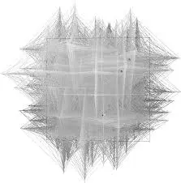
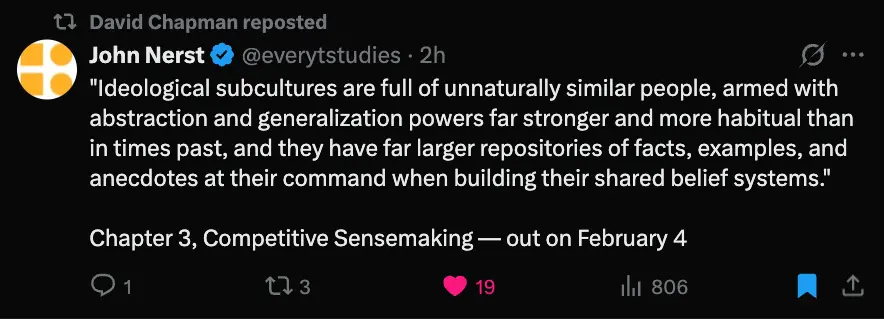
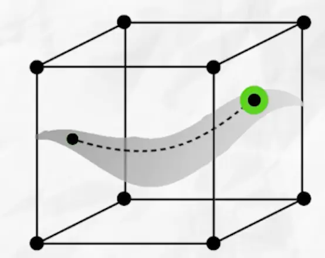
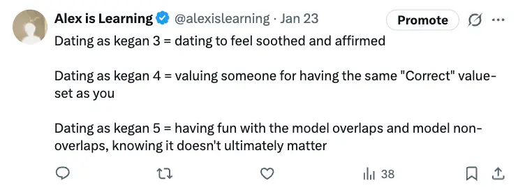
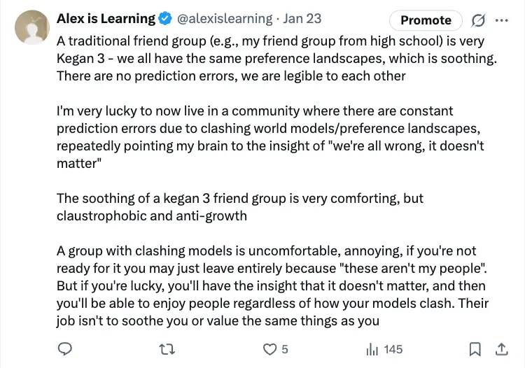
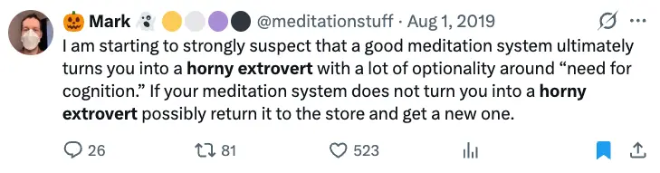
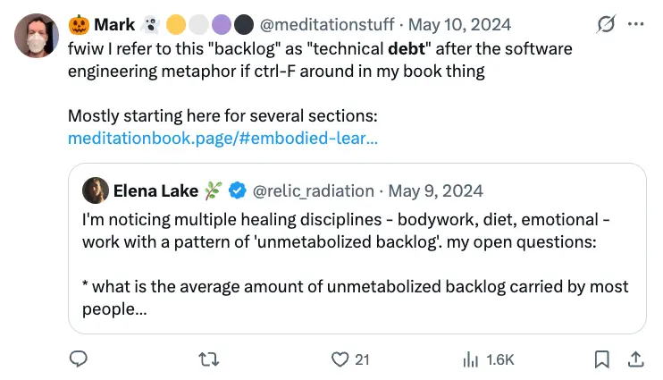
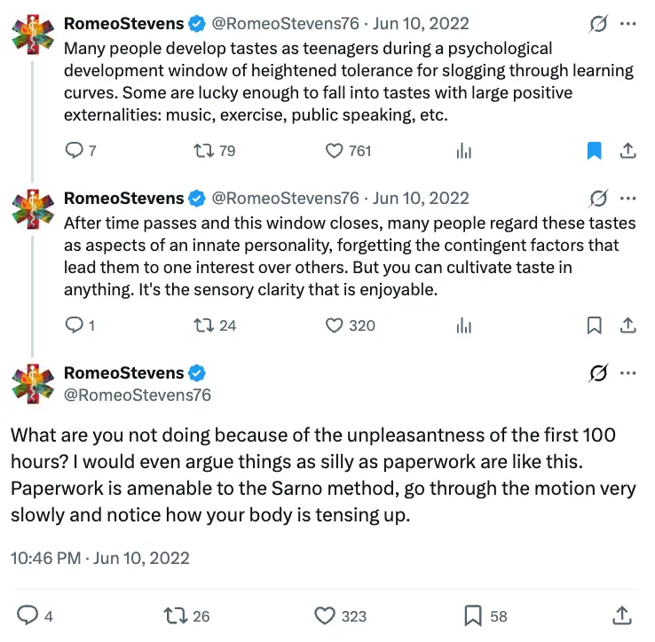
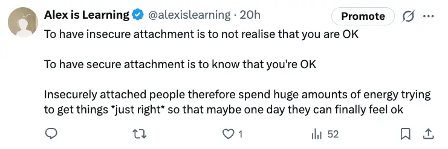

- Log per day - 2026
- 2026-01-31
- I think one of my absolute biggest failure modes atm is being kegan 4 as all shit dude.
- It’s like, there’s this very very hyperdimensional object of “preferences” or “values” or “opinions” etc, where each dimension is a spectrum, and you have some special blend which you call “the correct world view”, and you’re protective of it, think others who exist in a different configuration are wrong

- 👆 this is kinda how I envision the high dimensional object when I think/feel about this whole thing
- And, because you endorse your special blend, because you reify/deify certain axioms, there are all these downstream implications of your world view. Like, there are a bunch of things to figure out, to consider. Also a bunch of things to feel really torn about, because of course, your special Kegan 4 blend wasn’t created intelligently, wasn’t well engineered, so there are all these clashes, and silly limiting beliefs, incommensurable ideas/opinions, etc
- And this is how scenes, subgroups, communities, ideologies work - you find people who share the same axioms as you, who exist in the same place in… phase space? State space? Something about manifolds? I’m not well educated enough in math to get the metaphor quite right

- 👆 the tweet

- 👆 from the video “My Understanding of the Manifold Hypothesis ft Geoffrey Hinton | Deep Learning”.
- “high-dimensional data (like images) actually lies on much lower-dimensional “surfaces” or manifolds.”
- “Data that follows natural laws or specific structures (like a set of faces) lies on a low-dimensional manifold. While the “ambient space” is high-dimensional, the “degrees of freedom” are limited”
- This feels similar to attractor basins to me, and/or local minima. World-views, ideologies, sub-communities etc are attractor basins. “We all agree on the same stuff, so we can communicate effectively from the same axioms, we are intelligible to each other.”
- 👆 from the video “My Understanding of the Manifold Hypothesis ft Geoffrey Hinton | Deep Learning”.
- I don’t know if these are right, but:


- So, when I’m being a Kegan 4 dumbass, I am totally "blended with" my special Kegan 4 worldview (or perhaps, I am currently foregrounding and reifying/deifying one single value, for example “I must become more sociable”).
- This is the subject/object thing that Kegan talks about: when you’re “subject to” the thing, it’s holding you, and you’re not even aware of it. You’re like a fish in water.
- So, blended with this axiom, believing it to be true, you then have all these implications that you need to figure out and stress out about. “Because I definitely Need To Become More Sociable, I need to do xyz”. “Because I definitely Need To Live In The Perfect Country, I need to figure a bunch of stuff out”
- And you may spend years in a particular world-view, with people who agree with you, investigating the implications of the world view - AI safety is a salient example to me, but of course any career would apply. Finding people who share your axioms, learning (getting ""A”s”), being able to talk to people at the same level of abstraction (having the prerequisite “B” floor), etc.
- I am now calling this Scrunching
Unclench
“But at some point you realize that all principles are somewhat arbitrary or relative. There is no ultimately true principle on which a correct system can be built. It’s not just that we don’t yet know what the absolute truth is; it is that there cannot be one. All systems come to seem inherently empty.”
- 👆 https://vividness.live/developing-ethical-social-and-cognitive-competence
- The opposite of Scrunching
- I am now going to call this Unscrunching
- Will also make this into a separate page - Unscrunching
- But, if you’re stressing out about the implications of your Kegan 4 model, remember that it’s just a model, and none are right
- The Kegan 5 shift is from subject to object. You go from being subject to your world view, immersed in it, it being transparent to you, something that holds you, to being able to step back from it, see it as just one world view of many (infinite amounts?). So you can drop that line of thought, the panic, unclench, chill out

- 👆 there’s something here about how with a serious meditation practice, you gradually let go, unclench, and discover a lot more "optionality", a lot more “degrees of freedom”. The manifold(s) you were existing in were limiting the size of your move set, and now you can step back.
- (I saw a tweet (which I’ve since lost) that was like “‘unclench’ is a complete meditation instruction”)
- There’s also the idea of "technical debt"

- It currently feels right to me (blended with my Kegan 4 model, foregrounding certain axioms, lol), that this “technical debt” could be the mix of your Kegan 4 "opinions/values", and also "trauma", which are like, “stuck priors that were useful to you back then but are now suboptimal” (e.g., “if I’m quiet around men, they won’t snap at me” working for you to not get snapped at by your grandad, but now as an adult causing you to be somewhat uncomfortable around all men)
- Post I wanna read - “technical debt, meditation, and minds”
The metta sutta
But when one lives quite free from any view,
is virtuous, with perfect insight won,
and greed for sensual desires expelled —
one surely comes no more to any womb.
Where did your special blend come from?
- I imagine a lot of it is laid down in childhood/adolscence!
- For example, when I was a kid, my Dad introduced me to some music that I loved (e.g. The White Stripes). I listened to them a bunch, then he introduced me to The Strokes and I listened to them a bunch. And then because of this, I gradually become a “music nerd”, because of these early seeds being planted

Anyway, I could write about this more, but I’ll stop
- Doing stuff in order to Figure It Out and Arrive and Be OK
- Right now I’m blended with the Key Axiom of “if I keep writing/thinking, I’ll Figure It Out/Arrive/Be Able to Feel Good”
- But I can Arrive and Feel Good right now. I get step back from this axiom, be in the present moment
